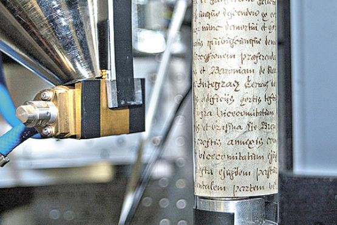

|

|
|
|
The different layers of the scroll are analyzed separately using a tomography technique
|
If you judge a book by its cover you may have dubious results, and it is even more complicated to analyze an
ancient scrolled parchment, without
title, or any visible indication of author. Researchers often face this problem when they unearth snippets of world history,
sometimes too fragile to be opened. To access the contents of these documents, and at the same time keep them from being damaged,
a group of British scientists has discovered how to X-ray the parchment scrolls and perform computerized reading, so that the
scroll remains safe and rolled up, and the reconstruction of the writing can be displayed in digital format.
The process can reveal the secrets kept by many records that remain closed to historians today.
The tomographic machine developed at the Universities of London and Cardiff is similar to that used in medical
examinations, but has higher precision.
Each installment increases the radiation bombarding the material, and a new layer is scanned. During the process, the document is
rotated so that a strip of 1 cm circumference is analyzed. Then the document is moved, and everything is done again until the
entire length of it has been scanned.
"The scanners made here are more sensitive than commercial, but at the cost of a slower sweep speed," explains Graham Davis,
University of London, who worked on the design of the machine. "The sensitivity is the most important factor in this
application, however. So we have to live with it," he adds. The process ensures the researcher does not damage the scrolls, as
long as they are dry.
Software created in Cardiff takes care to fit the slices in order to form an image similar to how the record
would appear if completely unrolled. The system uses a three-dimensional image and applies a three-step process of analysis: first,
it filters the data to remove "noise" image and differentiate the joined layers of parchment. Then it flattens the surface into a
two-dimensional image, and finally projects the ink onto the two-dimensional reconstruction.
The result is a detailed picture of up to 40 megapixels.
"It's like seeing the true parchment, it is a snapshot, then there is color, and brightness indicates the density,"
explains Prof. Paul Rosin, School of Computer Science and Informatics Cardiff.
|
|
|
|
After the software brings together the captured images it is possible to read the document as if it were unrolled
|
Iron
For paper, the same process would yield just a blank page, without the letters. However, for writing in scrolls
each letter appears on the screen. This is because the ink had formerly used scraps of iron,
which stand out in CT.
The machine can distinguish the different densities of the metal and rolled parchment made of animal skins.
The words become darker like a metal pin, which appears in an X-ray examination.
Indian inks and carbon-based, for example, are transparent to this type of equipment.
If the material has become illegible over time, it may be that not even iron-based writings to be deciphered.
"Depending on the environment and excess lighting and
humidity, it can really damage the parchment. The lighting can also harm the writing over time, "says Edmar
Goncalves, head of the Conservation Foundation Casa Rui Barbosa, of Rio de Janeiro.
However, says the restorer, the scroll is a much stronger support than paper. Even though it has suffered damage to prevent
their manipulation, and have to be kept rolled, the odds that the letters are still visible are great. In these cases, the most
common approach is to subject the material to a rehydration process to recover the original flexibility of leather and only then
try to unroll it.
Microview
The process was tested with a rather small and resected scroll of the 19th century. Still closed, it was placed in a transparent
tube on the machine, which swept the entire circumference of the cylinder and created an image such as would have been
obtained from a scanner. The document - which was legitimate, but had no real value - was then unrolled and the images were
compared, confirming the fidelity of the image produced.
Theoretically, the restoration will work on scrolls of any size, rolled or folded in any way, if they had made iron gall ink. "One
potential problem is that the writing could appear out of order due to leakage of the ink
when the ink surface through the scroll to the other side.
This obviously would create illegitimate characters, "says Paul Rosin.
This problem with the scrolls has not yet been studied by the group.
The technology, called microtomography, already has applications in the medical field and to characterize materials in oil
wells and buildings. "It is used for non-destructive testing. You can see the internal structure by means of radiation without
having to open the sample. Works with any type of material, "said Ricardo Tadeu Lopes, Professor of Nuclear Instrumentation
Laboratory, Federal University of Rio de Janeiro (UFRJ). The technique, says the expert, gained prominence in several areas over
the last five years.
In Brazil, this type of equipment has been used for analysis in works of art and artifacts such as the chariot
D. Pedro II Museum in Petropolis.
"We saw how the structure was built in order to do the restoration. You can check how to open and how to dismantle,
"says Lopes. With the examination, the restorers understand better how to handle the material and how to reproduce the features
damaged by time.
This, however, is the first time the technique of reconstruction has resulted in a truly readable image.
The British team has worked
on several adaptations of equipment and software to ensure the readability of the documents. Institutions such as the
National Maritime Museum English, have already shown interest in the technology. A Scottish museum wished to use the
equipment to decipher writing that seemed to be hidden in a papyrus stuck to the leg of a mummy.